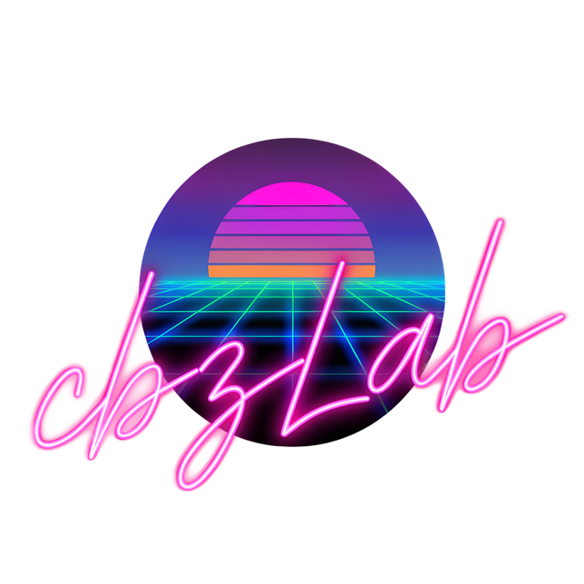
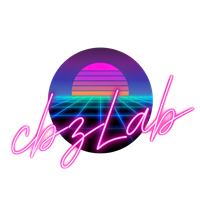

cbzLab
A metadata editor for comic book archives. Open CBZ and CBR files, edit their
ComicInfo.xml — single files or whole batches at once — and write changes back
safely, without ever touching the page images.


cbzLab
A metadata editor for comic book archives. Open CBZ and CBR files, edit their
ComicInfo.xml — single files or whole batches at once — and write changes back
safely, without ever touching the page images.
Reads both formats by content, not extension. Writes are atomic — a crash mid-save can't corrupt your comics — and page images are never touched.
Select several files at once and edit shared fields together, with clear mixed-value handling for anything that differs across the selection.
A full-width, customisable table across every open file — one row per book, one column per field — for spotting what's missing at a glance.
Solarized, Dracula, Nord, Gruvbox, Catppuccin, Tokyo Night and more, plus a neon-synthwave original — switch instantly, no restart.
Optional online metadata matching, with a side-by-side review step before anything is written — single files or a whole batch at once.
Built on .NET 8 and Avalonia UI. Self-contained single-file builds for Windows, Linux, and macOS (Intel and Apple Silicon).


Opening files, the editor, batch editing, grid view, saving, ComicVine lookup, settings and themes.
Environment setup and the exact commands to publish a distributable executable.
Version history for the current Avalonia app, plus the archived WinUI version's history below it.
Self-contained downloads for Windows, Linux, and macOS (Intel & Apple Silicon).